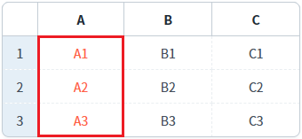
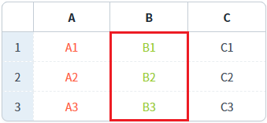

[GridView] 특정 컬럼의 글자색 설정하기
1개요
GridView의 'setColumnColor' 메소드를 사용하여 특정 컬럼의 글자색을 설정하는 예제입니다.
2구현된 기능
바디 컬럼의 인덱스로 글자색 설정하기
바디 컬럼의 아이디로 글자색 설정하기
3예제 테스트 방법
3.1특정 컬럼의 글자색 설정하기
1
STEP 1: 초기 상태를 확인합니다.
화면에 표시된 GridView의 바디 컬럼의 아이디는 다음과 같습니다.
Example 1.GridView의 바디 컬럼의 아이디
A: col_a B: col_b C: col_c
Image 1.브라우저(Chrome) 실행 예시

2
STEP 2: 바디 컬럼의 인덱스로 글자색 설정하기
"열의 글자색을 'tomato'로 설정하기 - body column의 index 사용" 버튼을 클릭합니다.3
STEP 3: 실행된 결과를 확인합니다.
GridView의 헤더명이 'A'인 컬럼의 글자색이 변경됩니다.
Image 2.브라우저(Chrome) 실행 예시 - GridVeiw

4
STEP 4: 바디 컬럼의 아이디로 글자색 설정하기
"열의 글자색을 '#9ACD32'로 설정하기 - body column의 id 사용" 버튼을 클릭합니다.5
STEP 5: 실행된 결과를 확인합니다.
GridView의 헤더명이 'B'인 컬럼의 글자색이 변경됩니다.
Image 3.브라우저(Chrome) 실행 예시 - GridVeiw

4구현 예시
4.1바디 컬럼의 인덱스로 글자색 설정하기
GridView의 'setColumnColor' 메소드를 사용하여 스크립트를 작성합니다. 세부 설정은 아래의 스크립트 예시에 작성되어 있습니다.
Example 2.Script
//예제 파일에서는 스크립트 scwin.btn_exam1_onclick에 작성되어 있습니다. //GridView 'grd_exam1'의 바디 컬럼의 index가 0번째인 컬럼의 글자색을 'tomato'로 설정하기 grd_exam1.setColumnColor(0, "tomato");
4.2바디 컬럼의 아이디로 글자색 설정하기
GridView의 'setColumnColor' 메소드를 사용하여 스크립트를 작성합니다. 세부 설정은 아래의 스크립트 예시에 작성되어 있습니다.
Example 3.Script
//예제 파일에서는 스크립트 scwin.btn_exam2_onclick에 작성되어 있습니다. //GridView 'grd_exam1'의 바디 컬럼의 'id'가 'col_b'인 컬럼의 글자색을 '#9ACD32'로 설정하기 grd_exam1.setColumnColor('col_b', "#9ACD32");
5주요 API
setColumnColor( colIndex , color )